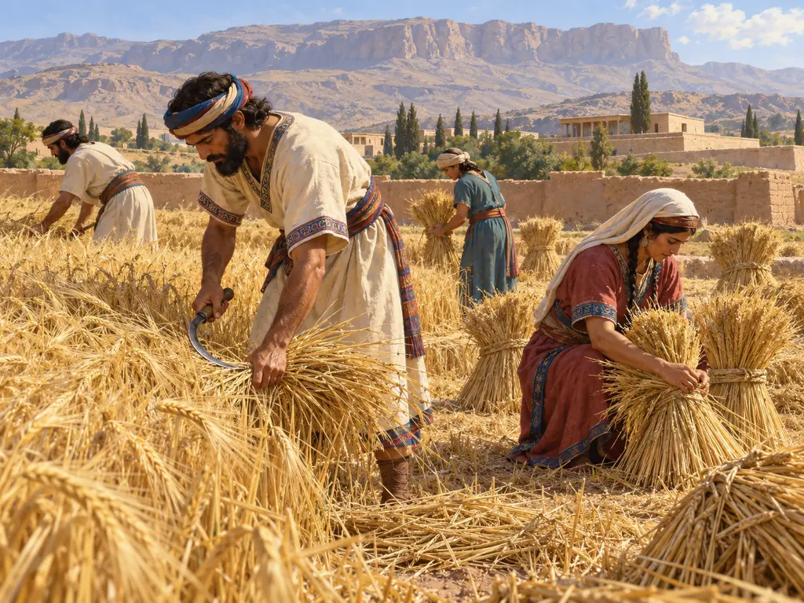
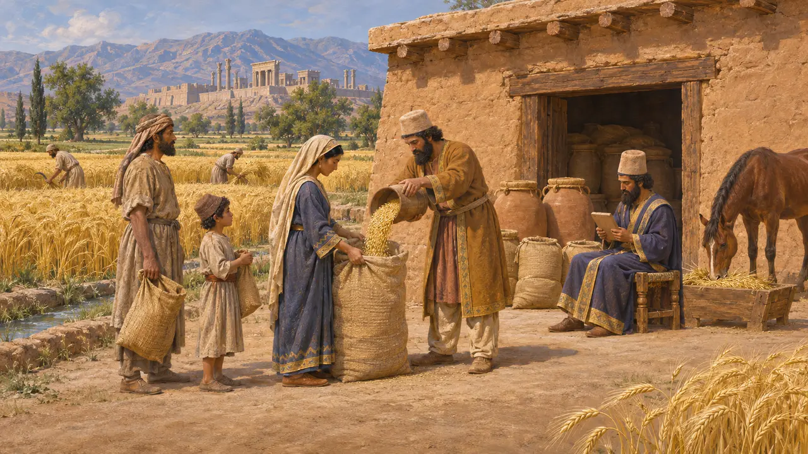
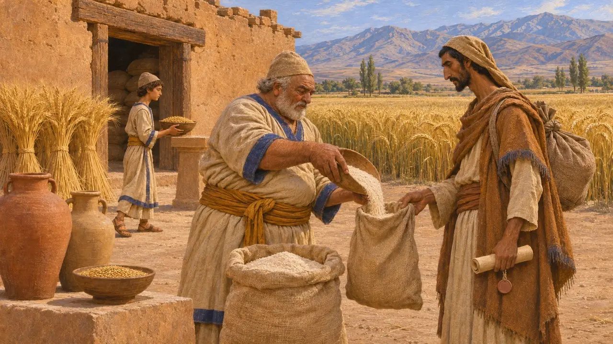
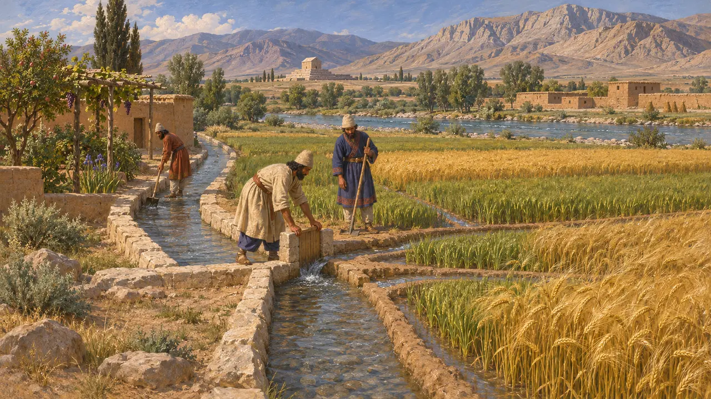
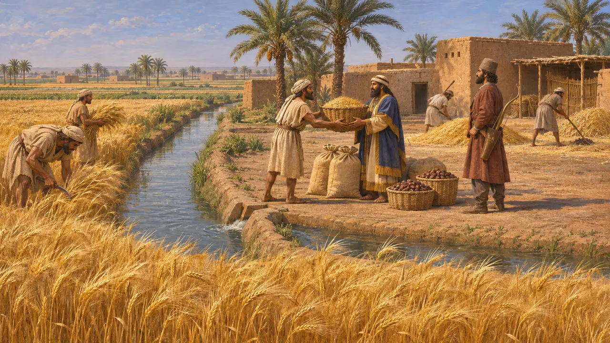
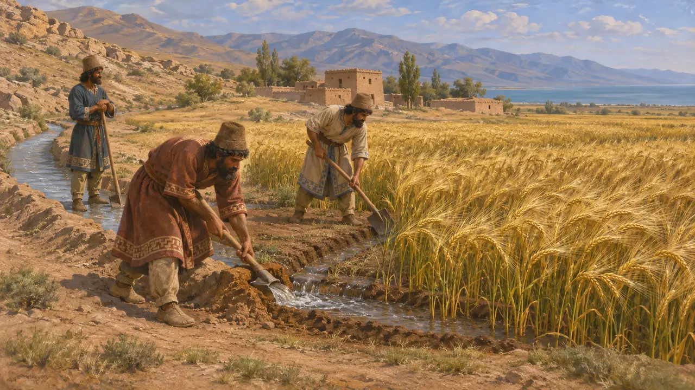

大麦はアケメネス朝の中心地と帝国の大部分で主要な穀物であった。労働者、兵士、家畜、そして王の食卓を養い、支払いの尺度としても用いられた。ペルセポリスの粘土文書には、王の倉庫を膨大な量の大麦が行き来していた様子が記されており、ペルシアの暮らしの中でも特によく記録の残る側面のひとつとなっている。
ゲームでは： ゲーム中の畑はプルヴァル川近くの運河で潤された土地で大麦を育て、荷車で穀物庫へ運ぶ。粘土板文書が示すところでは、実際の仕組みは王の倉庫と書記の帳簿を通じて運営されており、ゲームはそれを簡略化している。

ペルセポリス文書に見る大麦
同時代の記録ペルセポリス城砦文書は、紀元前509年から493年頃にかけて主にエラム語で記されたもので、他のどの品目よりも穀物を多く記録している。大麦は男女や子供を含む労働者への月ごとの配給として、また播種用の種籾として、さらに馬やその他の家畜の飼料として支給された。役人たちはペルシス全域からエラム方面にかけて、場所ごとに納入、貯蔵、支払いを記帳した。
R. T. Hallock, Persepolis Fortification Tablets, 1969

神々と客人と旅路のための穀物
同時代の記録同じ文書群には、エラムとイランの別なく、さまざまな神々への供物として大麦が支給されたことも記されている。封印された文書を携えて道を旅する者は、主に穀物から作った粉を、ビールや葡萄酒とともに配給として受け取った。大麦はビールにも醸造され、ビールは行政が扱う物資の中にも現れる。つまり穀物は食料であると同時に、統治の道具でもあったのである。
W. Henkelman, The Other Gods Who Are, 2008

高原の平野の畑と水
同時代の記録ペルシスは冬が寒く夏は乾燥するため、安定した収穫は川と水路にかかっていた。プルヴァール川のほとりのパサルガダエでは、王の庭園を貫いて走る石の水路が発掘されており、キュロスの治下で入念な水の管理が行われていたことを示している。のちにペルセポリス周辺の平野で行われた調査でも古代の運河や堰が記録されているが、それぞれの工事の正確な年代を定めるのは難しいことが多い。
D. Stronach, Pasargadae, 1978

帝国支配下のバビロニアの農地
同時代の記録バビロニアでは、ニップル出土のムラシュー文書が紀元前455〜403年頃のもので、本作の時代より後にあたる。そこには、兵役と税の見返りとして兵士や従属民に与えられた土地が記されており、「弓の土地」「馬の土地」「戦車の土地」と呼ばれた。ムラシュー家はこうした保有地を借り受け、水・種子・家畜を供給し、地代として大麦とナツメヤシの実を取り立てた。これらの文書は、帝国の土地保有と灌漑がいかに結びついていたかを示している。
M. W. Stolper, Entrepreneurs and Empire, 1985

収穫と水に関するギリシア人の報告
係争中ヘロドトスは、バビロニアの畑は播いた種の200倍、時には300倍の収穫をもたらしたと述べているが、歴史家はこの数字を大いに誇張されたものとみなしている。数世紀後に著述したポリュビオスは、カスピ海南方の乾燥地帯で水のない土地に水を引いた者には、ペルシア人が5世代にわたって土地の用益を認めたと記している。これが地下水路を指すのか、またそうした水路がアケメネス朝の時代にすでに広く普及していたのかについては、研究者の間で議論が分かれている。
Herodotus 1.193; Polybius 10.28
出典
- R. T. Hallock, Persepolis Fortification Tablets, 1969
- W. Henkelman, The Other Gods Who Are, 2008
- M. W. Stolper, Entrepreneurs and Empire, 1985
- D. Stronach, Pasargadae, 1978
- Herodotus 1.193
- Polybius 10.28